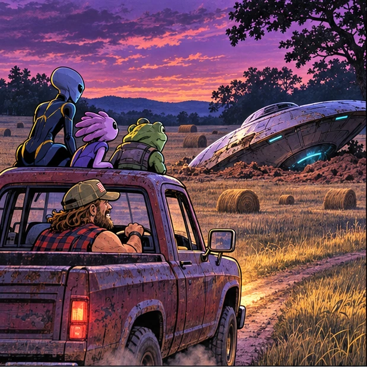

01The spacecraft takes out forty feet of fence and comes to rest against a salt lick. The cow finishes licking it. Commander Vey checks her crew. Ixi, the lilac signal tech, counts sparks. Ollo, the green quartermaster, counts fence posts.
BuckInsurance is gonna ask what model year that is.
OlloIt was grown in the winter of three moons. Will that help?
BuckWe'll put “other.”
VeyWe are the Alien Agency. We require a computer specialist. Discretion is customary.
BuckY'all landed in front of a cow. She's pretty good about things.